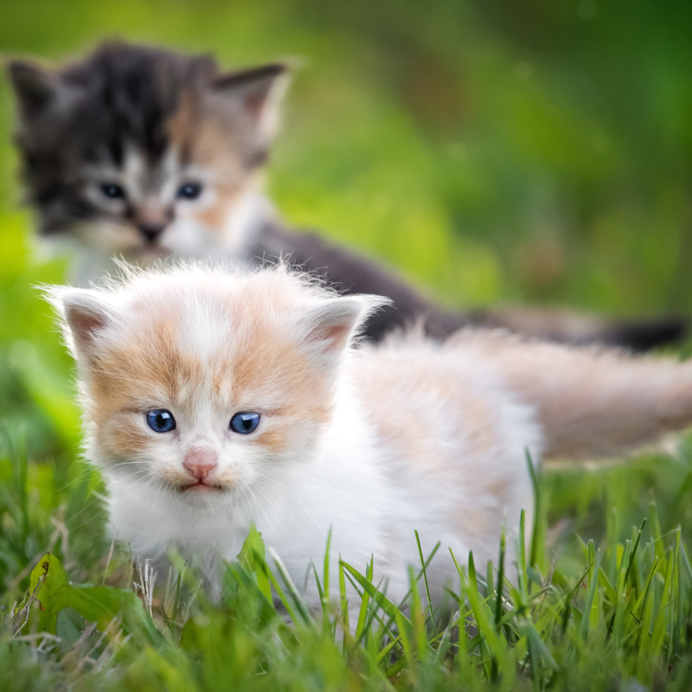

Cuidados com Filhotes
Os primeiros meses de vida são essenciais para o desenvolvimento saudável do gato. Cuidados adequados nessa fase garantem mais qualidade de vida no futuro.

Primeiros cuidados
Ao receber um filhote, é fundamental oferecer um ambiente seguro, tranquilo e adaptado. Nessa fase, os gatos são mais sensíveis e necessitam de atenção constante.
- Ambiente protegido e confortável
- Caixa de areia adequada
- Água limpa sempre disponível
- Evitar contato com outros animais inicialmente
Alimentação
A alimentação dos filhotes deve ser específica para essa fase, garantindo os nutrientes necessários para crescimento, desenvolvimento ósseo e fortalecimento do sistema imunológico.
- Ração própria para filhotes
- Alimentação fracionada ao longo do dia
- Evitar alimentos humanos
Introdução à alimentação sólida
A introdução da ração sólida deve ocorrer por volta das 4 semanas de vida, período em que o filhote inicia o processo de desmame.
Inicialmente, a ração pode ser umedecida com água morna para facilitar a ingestão. Com o tempo, o animal se adapta naturalmente ao alimento seco.
- 4 semanas: início com ração umedecida
- 6 a 8 semanas: aumento do consumo sólido
- Após 2 meses: alimentação sólida estabelecida
É essencial utilizar ração específica para filhotes, pois ela contém os nutrientes adequados para essa fase do desenvolvimento.
Vacinação inicial
A vacinação deve começar nas primeiras semanas de vida e seguir corretamente o protocolo veterinário.
- Início entre 6 a 8 semanas
- Reforços conforme orientação veterinária
- Vacina antirrábica obrigatória
Adaptação ao novo lar
O filhote pode levar alguns dias para se adaptar ao novo ambiente. É importante respeitar seu tempo e oferecer segurança.
- Evitar barulhos intensos
- Oferecer esconderijos seguros
- Interagir de forma gradual
Dicas importantes
O acompanhamento veterinário é essencial para garantir um crescimento saudável e prevenir possíveis doenças.
- Levar ao veterinário nos primeiros dias
- Realizar vermifugação
- Observar comportamento e saúde
Base científica
As orientações sobre alimentação e cuidados com filhotes são baseadas em diretrizes internacionais de nutrição e medicina veterinária.
Referências: AAFCO (Association of American Feed Control Officials) e WSAVA (World Small Animal Veterinary Association).